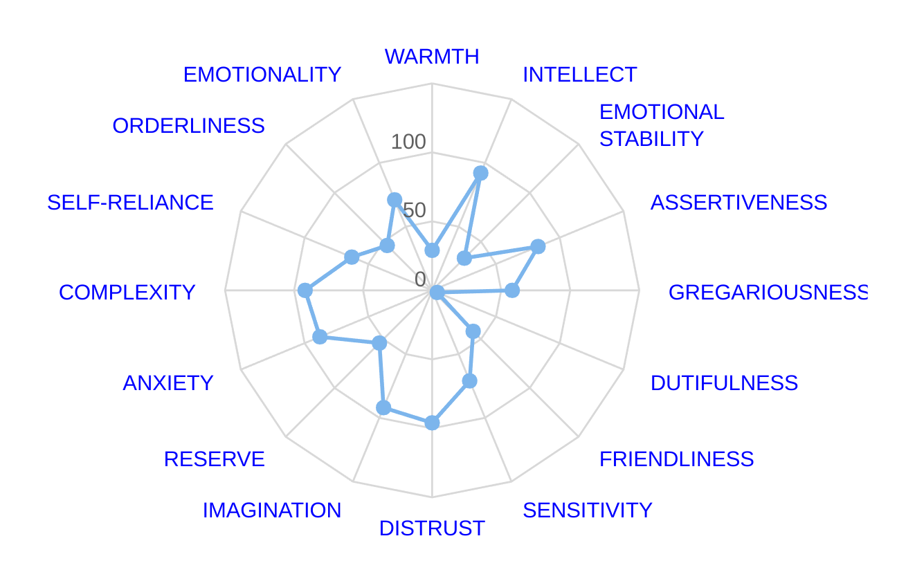

HOW I PERFORM MUSIC IN FRONT OF REAL PEOPLE
in truth, i don't usually perform in front of real, actual people because i have stage fright which has in the past rendered my voice a raisined collapsed husk of a thing and i shake a lot and i dont know how to combat it effectively yet but apparently nobody will care about your music unless you bring it to them and sing it at them directly, which isn't my favorite thing to have to do but i have caved so that people will listen and i have had a lot of fun developing techniques for hand delivering music in a live setting that i figure would be interesting to have archived here for people who are curious.
as you can see in the Personality Diagram from some website that exists only to extract facebook data from unsuspecting people who want a site of ill repute to tell them who they are supposed to be, i'm an intensely distrustful person (my highest rating, 96) which makes me an awful, awful, awful collaborator. in my life i have been in a couple of very small bands performing music that i didn't very much like and making compromises that i didn't very much like to make and so as i've started translating the music i've been making over the last two years for the Stage i've known that i will not be able to share the stage with someone else in all likelihood, ever, without feeling nauseous.
i have an ongoing document that contains notes related to electronic music that details like my "theoretical orientation" toward live performance in a sort of haphazard way but i'll summarize here for a quick sec: most solo "contemporary indie" electronic musicians (panda bear, oneohtrix point never, etc) are really boring to watch (at least videos of) because they typically stand in front of a desk hitting buttons with live visuals projected which are typically only tenuously tied to the actual audio at best and the performance is limited in terms of expressiveness and intimacy and, just, like, presence!! and i wanted to devise a live set which felt more present and expressive and it's still only a work in progress because i can't afford all of the materials for what i would ideally like to do atm, because i was recently fired and i hate my life etc etc etc etc but i'll detail what i've done so far and what i intend to do in the future and you can imagine what it would be like all fleshed out
basically my goals were this:
- be able to perform alone and still be interesting
- get out from behind a desk as much as possible
- have a visual component that is both directly connected to the audio and more intimate and "present" than projections
- be more expressive than the traditional knob-twiddling "high-level conductor" strategies, even at the expense of control over how tracks develop/elapse/transpire